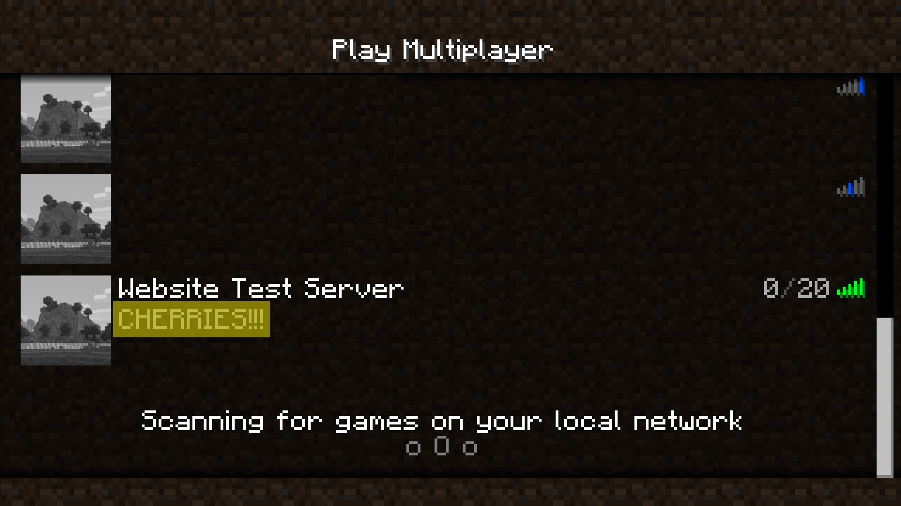

Modifying Your World: Server Properties
What Are Server Properties?
Server Properties are found in the server.properties folder of your server directory. They allow you to change aspects of your server without needing to be in-game. Some properties deal with the setup, optimization, and customization of the world itself, while others deal with gameplay aspects and have comparable server commands that can be used while in-game. Below is a list of commonly used server properties, as well as their function.
| Property | Function |
|---|---|
| gamemode | Change to play in creative or survival. Add in the preferred gamemode after the "=". |
| spawn-protection | Specifies the radius of blocks around the server's spawnpoint that cannot be broken. Change to 0 to eliminate the spawn-protection entirely. |
| white-list | Creates a list of usernames that have exclusive access to the server. Helps protect the server from malicious actors that scan the net for minecraft servers to destroy player creations. |
| difficulty | Changes the difficulty level of the server. Set to peaceful, easy, normal, or hard. |
| pvp | Allows players to deal damage to each other. Set to "true" to enable this setting, or "false" to disable it. |
| max-players | Specifies how many players can be on your server at any one time. Adjust this depending on how much RAM you have dedicated to your server. |
| level-seed | Allows you to insert a seed for a world to generate from if you have a preferred one. |
| allow-nether | Set to "true" to enable the nether dimension and allow nether portals to function, set to "false" to disable these features. |
Server Properties In Action
Below are examples of some other server properties whose effects on the world can be easily shown in images.
- view-distance
The view-distance property adjusts how far (in chunks) players will be able to see on the server. Chunks are a 16x16 unit of blocks in Minecraft that allow the game to create This setting can cause performance issues if the server's hardware isn't powerful enough, so it's recommended to keep this set to the default value unless you've dedicated at least 2GB of RAM to your server. See the "Modifying the Start Command" step on the How to Setup a Minecraft Server" page for more information about how to do this.
Below is an example of the view-distance property set to 10.

- motd
The motd property allows you to set a message that will appear in the server's box in the multiplayer menu. MOTD is an abbreviation for "message of the day" but it doesn't need to be updated daily. Highlighted below is the MOTD that has been set for the guide's test server.
 - spawn-monsters
The spawn-monsters property tells the game whether or not to spawn monsters. By using this command, you control monster spawning independently of difficulty level (usually, peaceful difficulty does not spawn monsters, and all other difficulties will).
Below shows the game with this setting set to true.

And an example of the view-distance property set to 20.

Here is an example of the property set to false.

More Customization Options
While the server-properties folder allows you to perform powerful optimizations and customizations, some settings can be controlled from the game itself. For more information about server customization, see the Server Commands page.
Other Pages
How to Setup a Minecraft Server
Connecting Worldwide: Port Forwarding
Changing the Game: Server Commands